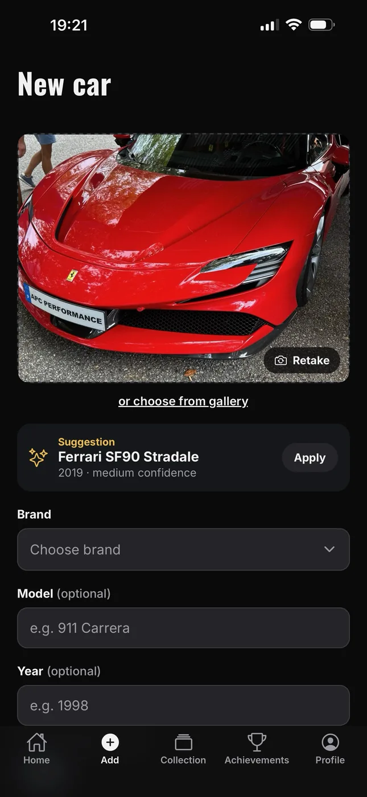
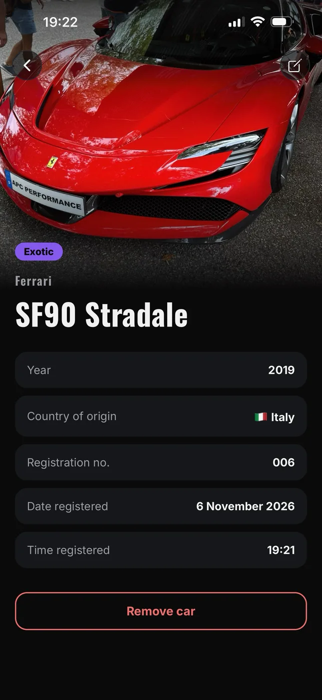
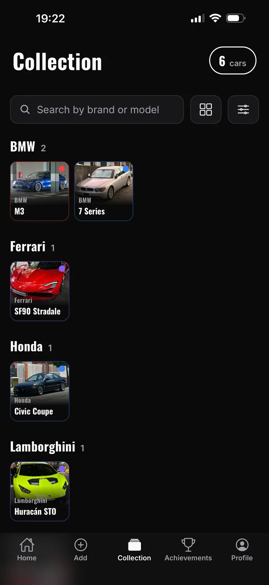
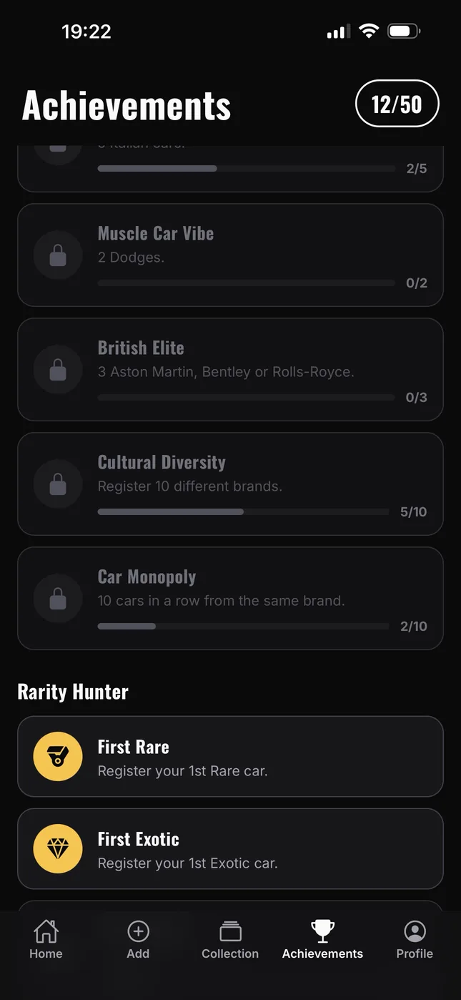
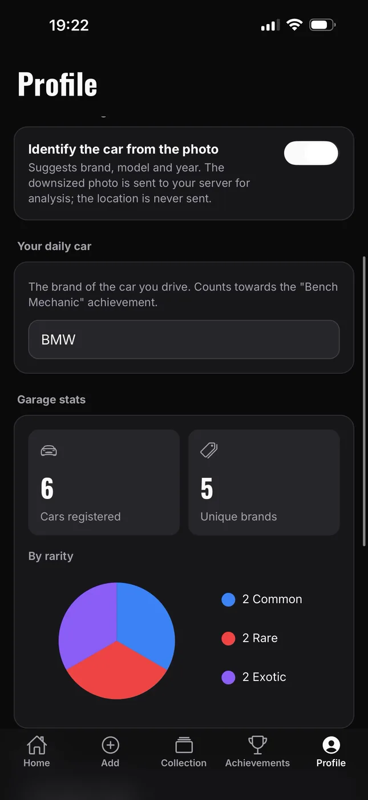

Secure AI integration
The model is called through a Cloudflare Worker, so the API key never ships inside the app. The app validates the response again before using it.
Case study
A pocket album for cars. Spot a car on the street and take a photo. The app suggests the brand, model and year with a vision model, scores its rarity, pins where you saw it and unlocks achievements as your collection grows. A Pokédex for cars.

01 · Demo
The video shows the app in English; Portuguese is also built in. Open on YouTube ↗
02 · In short
The model is called through a Cloudflare Worker, so the API key never ships inside the app. The app validates the response again before using it.
Recognition is opt-in, never saves on its own, can be undone, and is offered at the moment it makes sense instead of at install time.
Rarity, response validation, backup sanitizing, search and achievements are pure functions covered by 173 tests, run on every push.
Providers only write after loading, imported backups are treated as untrusted input, and importing never deletes or overwrites anything.
Everything lives on the device, with no account and no backend to keep running. The only server is the optional recognition proxy.
03 · Screens





04 · Features
Suggests brand, model and year. High confidence fills the empty fields; medium or low confidence only shows a suggestion to apply. Everything can be undone.
Common, Rare or Exotic, calculated from the brand plus model rules. It can't be edited by hand, so the same car always gets the same rarity.
About 1,600 suggested models. The country comes from the brand and is only asked for when the brand isn't in the list.
Grouped by brand with sticky headers, searchable by brand and model, filterable by rarity, year and country, with large or small cards.
Cars taken with the camera are pinned on a map, with the date, time and a Pokédex-style registration number.
Across quantity, brands, rarity, time and style, to give you a reason to come back.
Export and import the garage with its photos. Save it to iCloud Drive or Google Drive; Profile shows when you last backed up.
Brand, model and year can be fixed after saving; country and rarity are recalculated.
Follows the phone language by default, with a first launch that handles language and permissions.
05 · Architecture
Recognizing a car
Project structure
App.js providers and splash
__tests__/ Jest unit tests
locales/ iOS permission texts (PT/EN)
server/ Cloudflare Worker (AI proxy)
src/
├── achievements/ 50 achievements and evaluation
├── components/ cards, sheets, error boundary
├── context/ cars, settings, achievements
├── data/ brand and model lists
├── i18n/ PT/EN dictionaries and t()
├── navigation/ AppRoot, stack and tabs
├── screens/ Home, Add, Edit, Collection…
├── services/ recognition client
└── utils/ rarity, backup, photos, filtersScreens talk to a chain of providers (I18n → Settings → Cars → Achievements), which use services and pure logic. AsyncStorage, the photo files and the Worker sit at the bottom.
Only src/services/recognition.js knows about the server. It could be replaced by an on-device model without touching the screens.
Native modules used in a single place are loaded lazily: if one is missing, one feature turns off instead of the app crashing.
06 · Technical decisions
Problem: a key inside a mobile app can be extracted.
Solution: a Worker of under 80 lines holds the key as a secret and validates every request. The app token isn't a strong secret, so the real protection is a monthly spending limit on the API account. The Worker doesn't store photos and the location never leaves the phone.
Problem: the model can mix up close variants of the same car.
Solution: the AI suggests instead of deciding. Only high-confidence answers fill the form on their own, and everything can be undone. The model is also told to ignore text in the image and never read license plates.
Problem: if rarity were editable, collections would stop being comparable.
Solution: calculateRarity(brand, model) has two layers: the brand sets a baseline and per-model rules can only raise it. Rules match whole words, so "M3" counts but "M Sport" doesn't.
Problem: an empty first render or a broken backup could wipe real data.
Solution: providers only write after loading. If stored data can't be read, a copy of the raw text is kept. Imported backups are sanitized field by field and never overwrite anything.
Problem: with rarity rules, achievements and translations, it was easy to break something without noticing.
Solution: the logic lives in pure functions with 173 tests, including the false positives the rules avoid and PT/EN translation parity. GitHub Actions runs ESLint and the tests on every push.
Problem: a public APK with recognition turned on would let anyone run up the author's API bill.
Solution: the APK is built without the server address and token on purpose. Everything else works offline, and recognition is shown in the demo video.
07 · Technologies
08 · Technical honesty
09 · Takeaways
On Android you can install the APK. On iPhone, watch the video or build it from source.